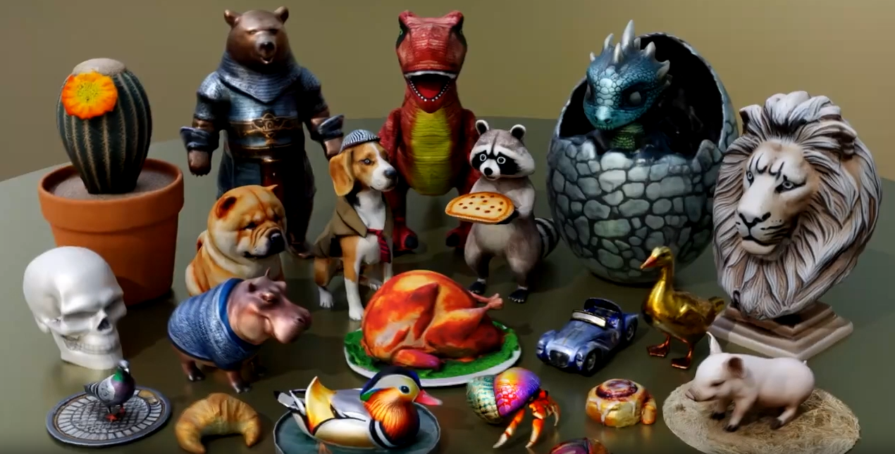
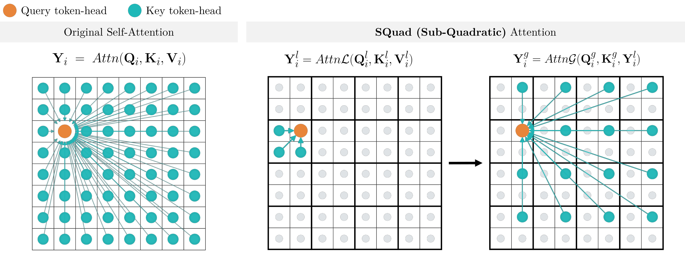
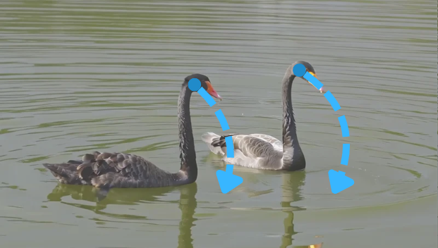
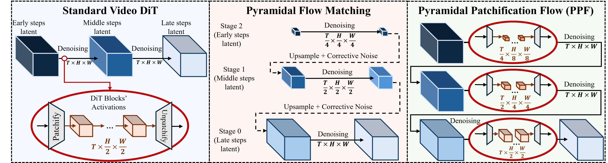
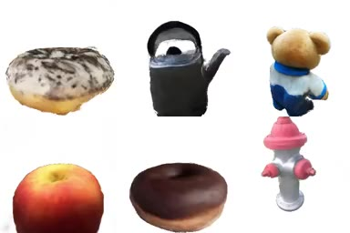
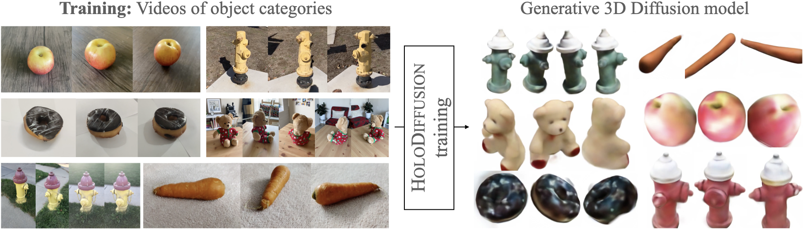
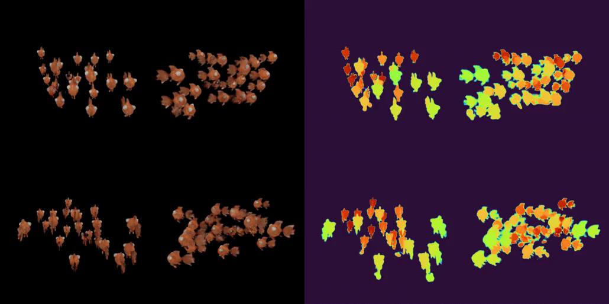
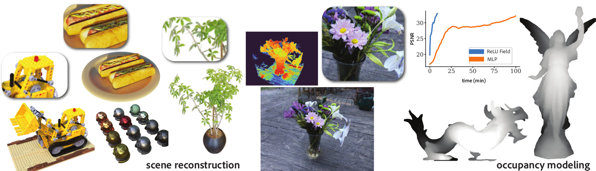
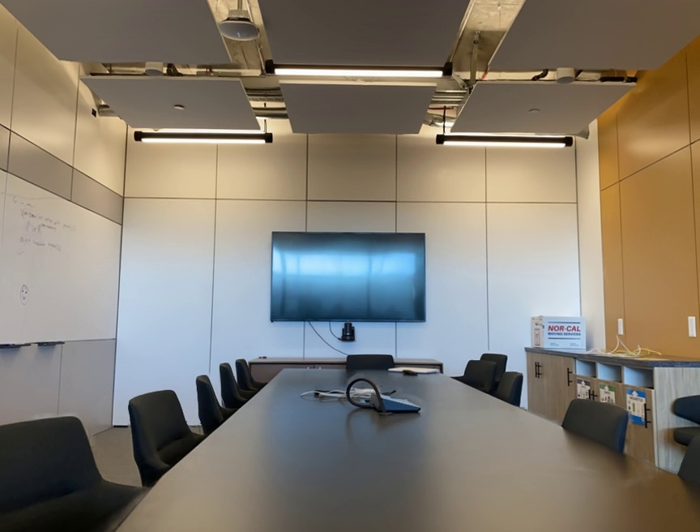


Hi, I'm Animesh. I am a Senior Research Scientist at Qualcomm AI Research in Amsterdam. My research focus is on efficient and controllable video generative AI.
I did my Ph.D. at UCL, London.
Apart from this, I am passionate about cameras, and visual-storytelling. My Instagram account: @akanimax3
Shipped Products and Demos

Publications

We distill the quadratic attention of a pretrained video diffusion model into a sub-quadratic alternative. Replacing all 30 blocks with SQuad-Attention recovers the original quality (82.99 VBench Tot.), but only when supervised fine-tuning and DMD2 are composed — either stage alone falls short.

We construct 3D-grounded, motion-consistent initial noise for video diffusion, giving unified control over object motion, camera motion, and both jointly — including complex 3D trajectories — without retraining the base model.

We convert a pretrained video diffusion model into a pyramidal one, denoising at increasing spatial resolutions across timesteps, so that most of the sampling trajectory runs at low resolution and inference gets substantially cheaper.

GOEmbed (Gradient Origin Embeddings) encodes source views into arbitrary 3D radiance-field representations while maximizing the transfer of source information.

HoloFusion generates photo-realistic 3D radiance fields by extending HoloDiffusion with a jointly trained 2D super-resolution network.

The first 3D-aware generative diffusion model that produces 3D-consistent images while being trained with only posed image supervision.

An unconditional 3D generative model trained from 2D images of a single self-similar 3D scene.

A method to represent complex signals such as images or 3D scenes on regularly sampled grid vertices, matching the expressiveness of coordinate-based MLPs while retaining the speed of voxel grids — without neural networks or sparse data structures.

A cascaded architecture for novel view synthesis combining a hierarchical depth regression network with a depth-aware generator, rendering spatially and temporally consistent target images.

A simple but effective technique addressing GAN instability by allowing gradients to flow from the discriminator to the generator at multiple scales — a stable alternative to progressive growing.